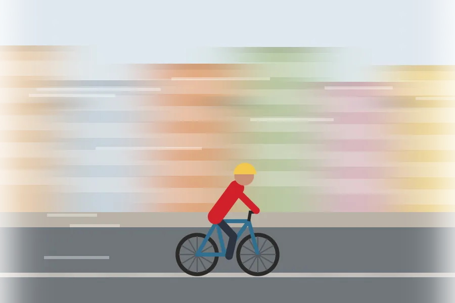
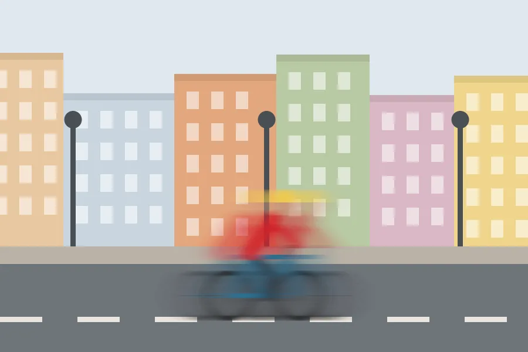
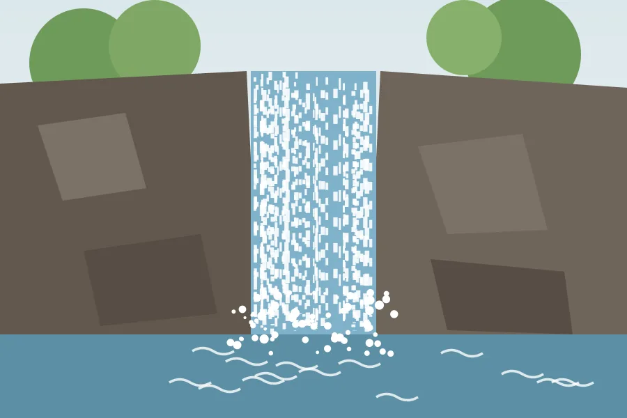
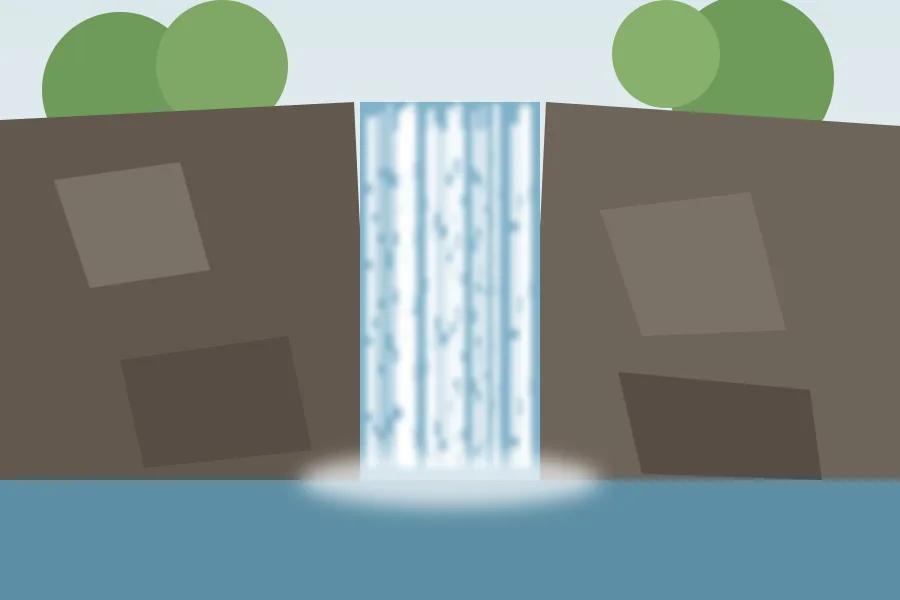
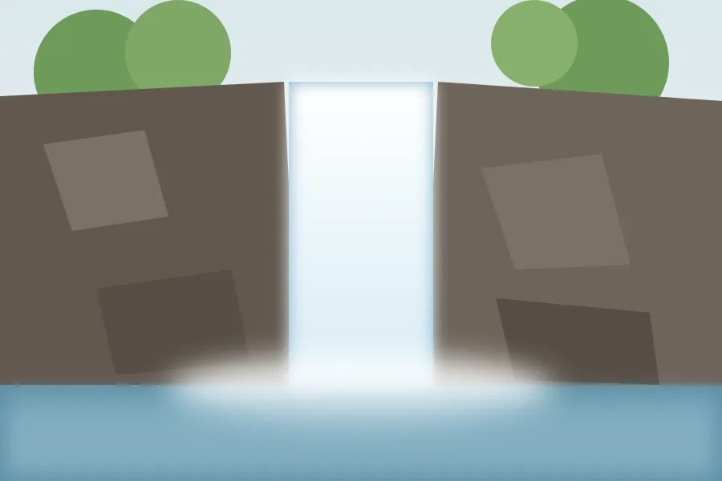

Chapter 8 treated shutter speed as one side of the exposure triangle. Here it becomes a brush. Every photo is a slice of time, and you choose how thick the slice is. A thousandth of a second stops a splash in mid-air. Half a second turns the same splash into a soft white veil. Neither is more correct. They tell different stories about the same moment.
Freezing the moment
To stop movement you need a fast shutter, and how fast depends on how quickly the subject crosses the frame. People walking freeze at around 1/250 s. Running children and cyclists need 1/1000 s. Birds in flight and splashing water want 1/2000 s or faster. Something moving across the frame needs a faster speed than something coming straight at you.
Fast shutters need light, so open the aperture and let the ISO rise. Use continuous autofocus (chapter 9) and shoot short bursts. The best frame is often the peak of the action, the top of a jump or the moment a ball meets the racket, and a burst gives you several tries at it.
Panning


Panning means following a moving subject with the camera while the shutter is open. If you match its speed, the subject stays fairly sharp while the background smears into streaks. The picture feels fast, even though it’s calm and well composed.
Start around 1/30 s for cyclists and 1/125 s for cars. Stand with your feet facing the spot where you want the picture, then turn from the hips to pick the subject up early. Press the shutter as it passes and keep turning afterwards, like a golfer following through. Continuous autofocus helps. Expect plenty of misses. Even good panners keep only a few frames from a burst.
Long exposures



Leave the shutter open for a second or more and anything moving turns soft. Waterfalls become silk and clouds stretch into streaks. A busy square slowly empties, because people who keep walking never stay in one place long enough to show up. Anything still stays sharp, and that contrast is the whole point.
You’ll need a tripod, or at least a wall or a bag to rest the camera on, and the self-timer so you don’t jog the camera when you press the button. In daylight even f/16 and ISO 100 let in too much light for a slow shutter. That’s what ND filters are for (chapter 10). After dark you won’t need one, and chapter 12 picks up from there.
Moving the camera on purpose
Intentional camera movement turns the rules upside down. Set a slow shutter, around 1/4 s to 1 s, and move the camera during the exposure. Sweep upwards along a row of birch trees and the trunks turn into streaks of white and grey, like a painting. It works best with simple, strong shapes and clear colours. Every frame is different, so take dozens and keep the ones that feel right.
Exercises
Exercises B1–B4. Tick each one off when you’ve tried it. Your ticks stay on this phone or computer.
- B1
Four speeds
Photograph a fountain or a stream at 1/1000 s, 1/125 s, 1/15 s and 1 s. Rest the camera on something for the slow ones and compare.
- B2
Panning
Stand by a road and pan with passing cyclists or cars at 1/30 s. Take at least thirty frames and keep the sharpest.
- B3
Empty the square
Put the camera on a tripod in a busy square and use an ND filter to reach an exposure of 30 s or more. See who disappears.
- B4
Paint with the camera
Set 1/2 s and sweep the camera up a row of tree trunks. Try different speeds of sweep and keep your favourite.
Photography Handbook, © 2026 Samskara Photo Club. Text and illustrations are licensed under CC BY-NC-SA 4.0. You may share and adapt them for non-commercial use if you credit the club and share your version under the same licence. Commercial use needs the club’s permission. The club logo is not covered by the licence.